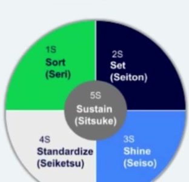

FLIGHT DECK Activation Hub
Flight Deck Fundamental · 07 of 08
5S
5S is a method to maintain a safe, clean & orderly work environment. It is a foundational tool with the intent to improve safety, quality, productivity, and employee morale by reducing waste and optimizing processes. It is the basis for problem solving and waste elimination.

Learn it
Introduction by Chrissy BuckinghamSort, Set in Order, Shine, Standardize, Sustain — at work and in life
5S OverviewThe one-page fundamental overview · download
Learning SimulationsPractice the 5S sequence before you run it live
5S in Action ExamplesReal cells, before and after
5S Introduction▶
Introduction
Chrissy Buckingham breaks down the 5S tools—Sort, Set in Order, Shine, Standardize, and Sustain—and shows how they can transform both your work and personal life.